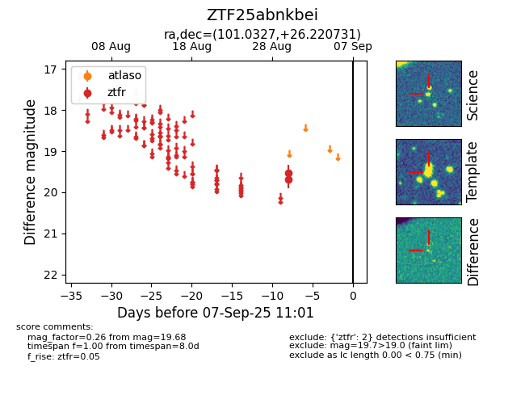

FINK: ZTF25abnkbei
Lasair: ZTF25abnkbei
ALeRCE: ZTF25abnkbei
ZTF25abnkbei (ztf,fink)
equatorial (ra, dec) = (101.0327,+26.22073)
galactic (l, b) = (188.5569,+10.13780)

last ztfr=19.68
2 ztfr detections